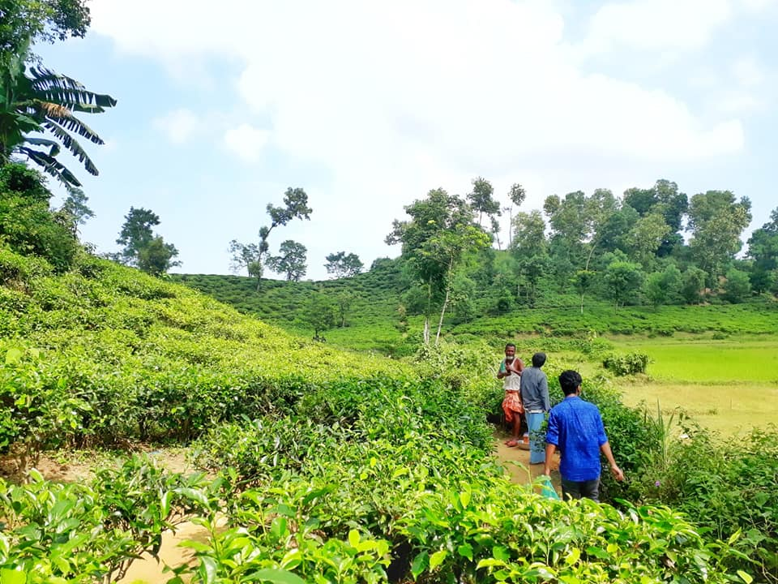
Srimangal, sylhet
Srimangal, the tea capital of Bangladesh, having most of the tea gardens of the country, is called "The land of two leaves and a bud". The largest tea garden in the world is situated here.
read more
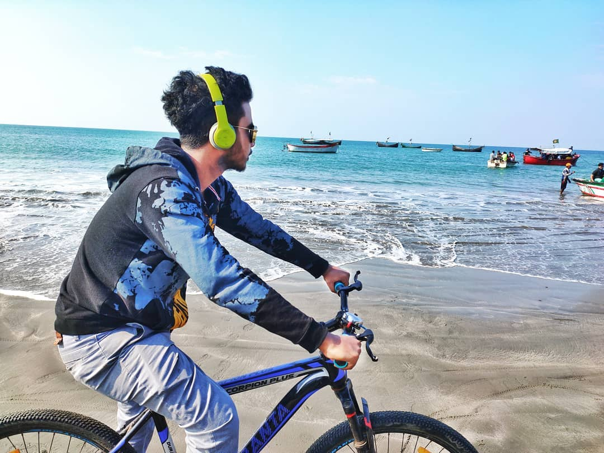
Saint Martin Island
It is a small island in the north eastern part of the Bay of Bengal, created the southernmost part of our country. It is about 8 km west of the northwest coast of Myanmar, at the mouth of the Naf River.
read more
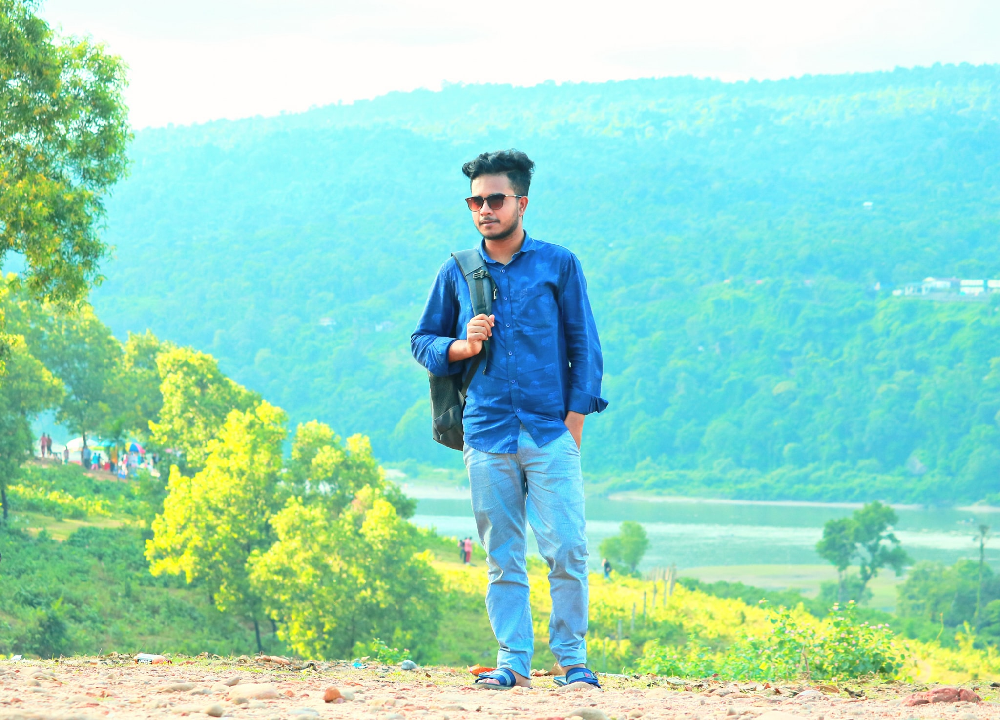
Jaflong, Sylhet
Jaflong is famous for its stone collections and is home of the Khasia tribe. Jaflong is also a scenic spot nearby amidst tea gardens and rare beauty
of rolling stones from hills.
read more
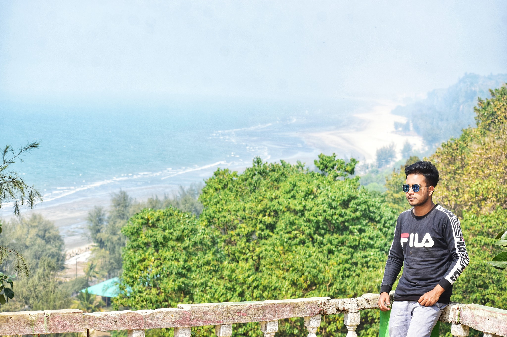
Cox's Bazar
Cox's Bazar is a city, fishing port, tourism center, and district headquarters in southeastern Bangladesh. It is famous mostly for its long natural sandy beach.
read more
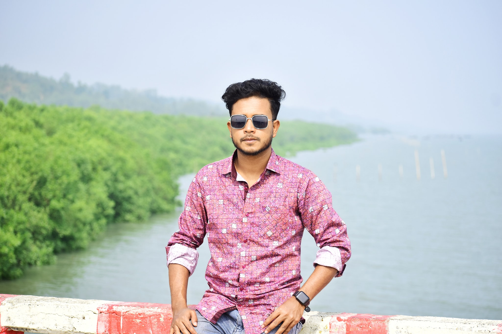
Maheshkhali Island
This island is also famous for salt production. Adinath Temple is a famous pilgrimage site of the island where thousands of Hindu devotees congregate on an annual occasion.
read more
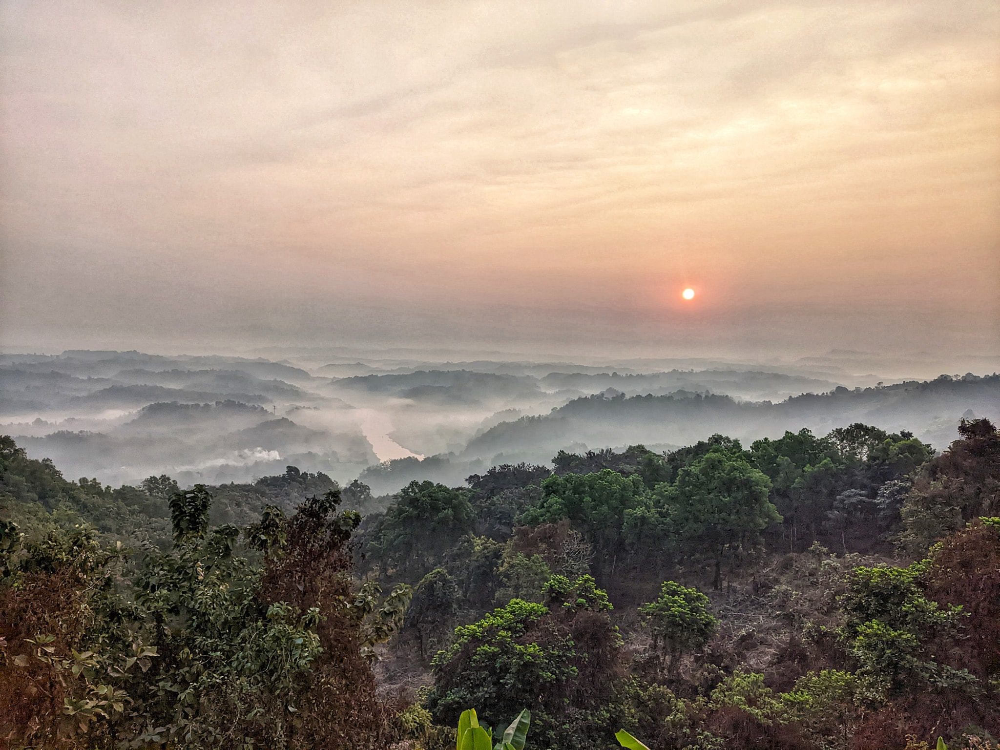
Bandarban
Bandarban, located in the Chittagong Hill Tracts of Bangladesh, is renowned for its stunning landscapes and rich cultural heritage.
read more
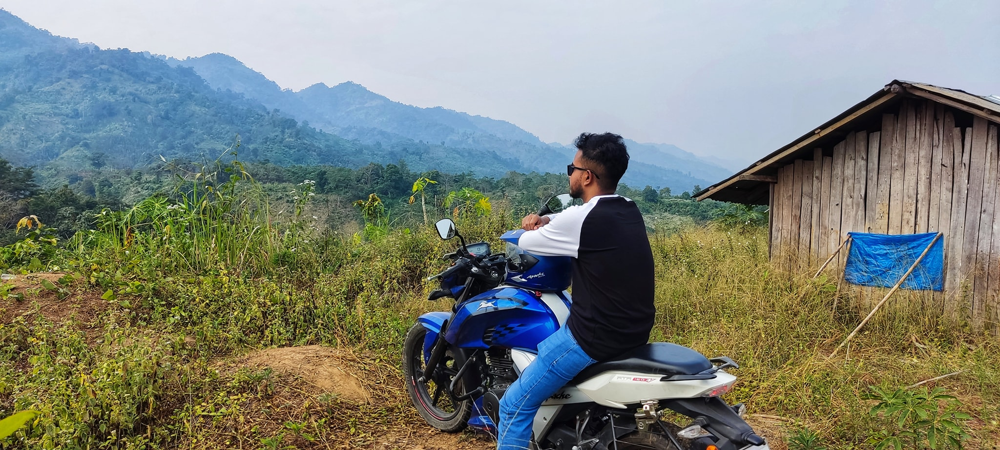
Rangamati
Rangamati is also famous for cashew nut, water melon, Bangla Banana, fresh fishes of Kaptai lake. The district is also known to all for having a hydraulic Power Plant at Kaptai and Terrestrial Earth Satellite at Betbunia
read more
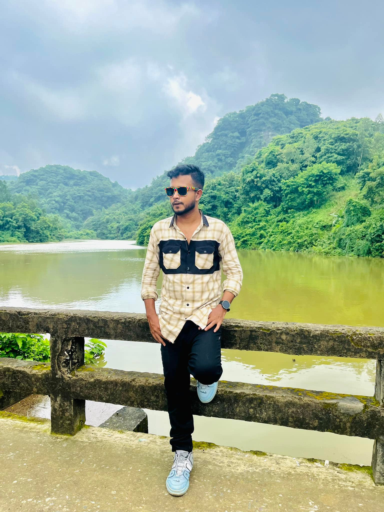
Sitakunda khoiyachora
Sitakunda is renowned for its numerous Islamic, Hindu and Buddhist shrines. It has 280 mosques, 8 mazars, 49 Hindu temples, 4 ashrams, and 3 Buddhist temples.
read more
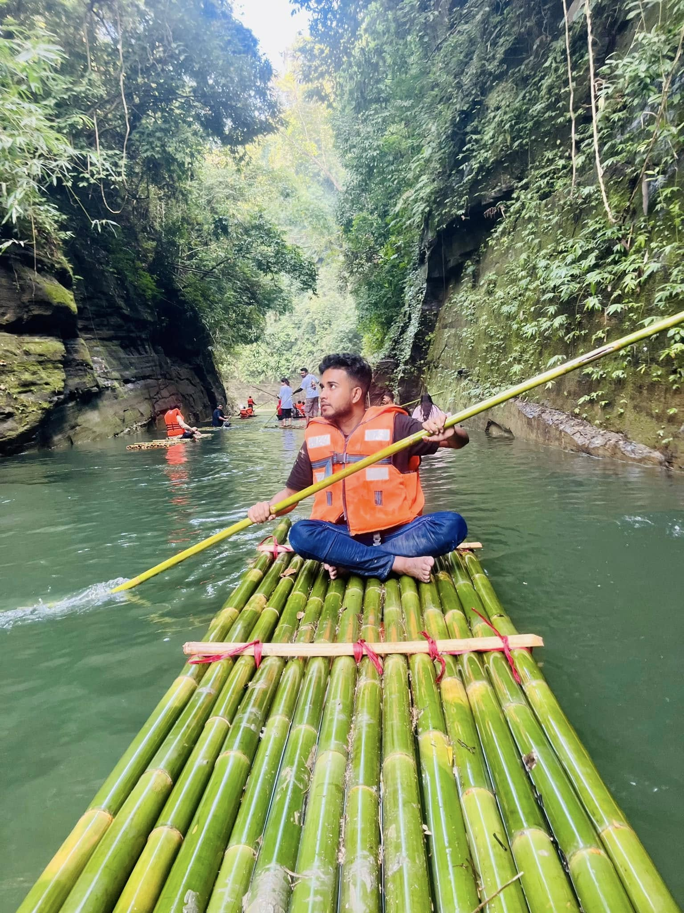
Debotakhum Bandarban
Debotakhum is called the king of all khums. According to the locals, this khum is about 50 to 70 feet deep and 600 feet long which is much larger than Velakhum
read more
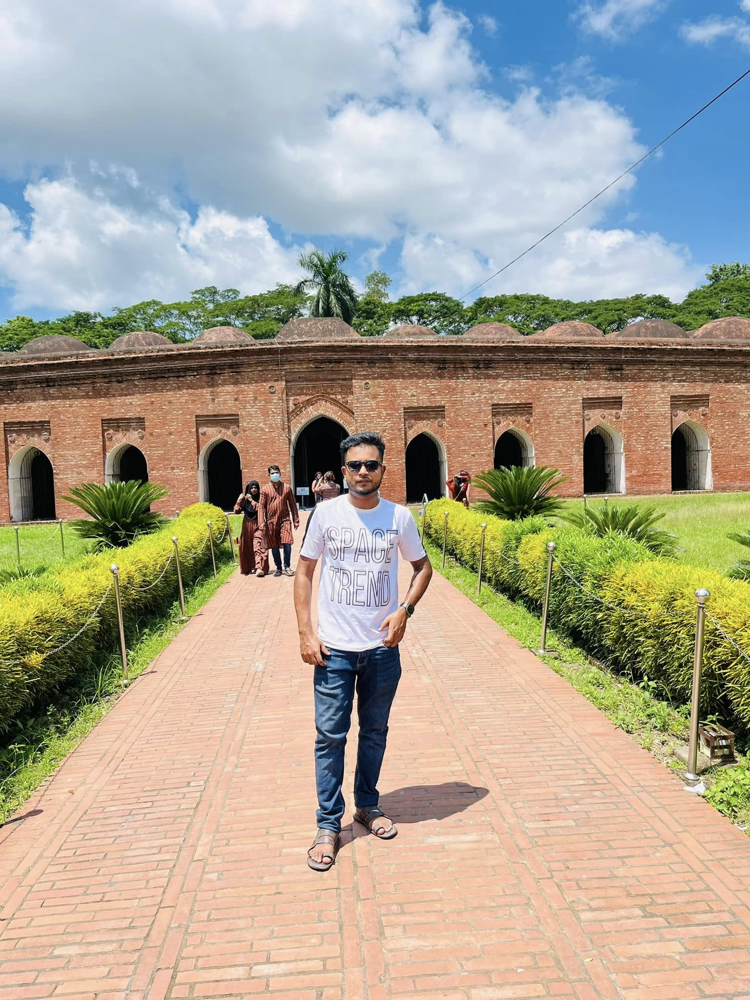
Sixty Dome Mosque
The Sixty Dome Mosque, on the eastern bank of a water tank or pond (the Ghora Dighi), is one of the oldest mosques in the country and is described as a "historic mosque representing the Golden Era of Muslim Bengal".
read more
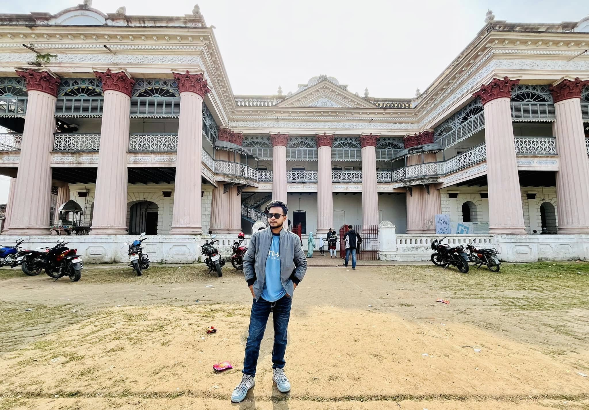
Puthia Rajbari, Rajshahi
Puthia Rajbari is a palace in Puthia Upazila, Rajshahi District in Bangladesh. It was built in 1895, by Maharani Hemanta Kumari Devi in the memory of her mother-in-law Maharani Saratsundari Devi
read more

Chandranath Hill,Sitakunda
Chandranath Peak situated in the Western range of Chittagong is about 1152 feet (around) high and is the highest point in Chittagong District. Ambernama height is 900 feet and Saijjydala height is 801 feet.
read more
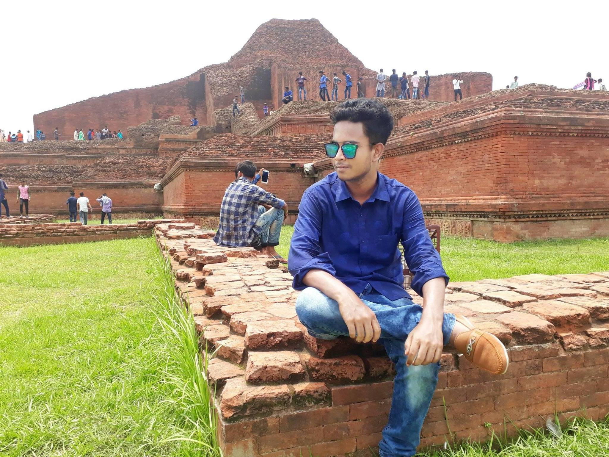
Paharpur ,Naogaon
Paharpur is a village in the Naogaon district of Bangladesh, where the ruins of the Somapura Mahavihara monastery are located. The site is a UNESCO World Heritage Site
read more